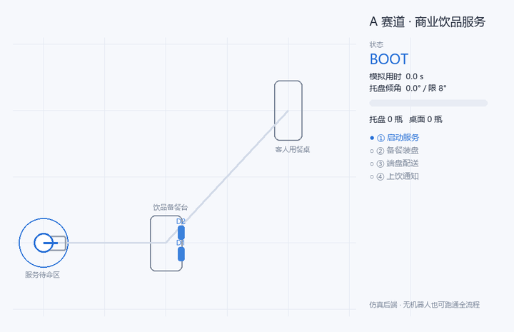
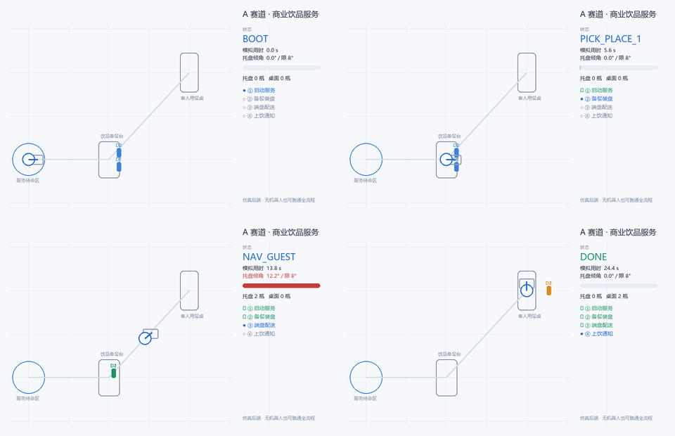
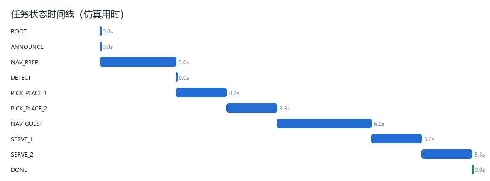

要求摘要
90 分钟总赛时 · 每轮目标 5 分钟 · 最多 2 轮
从预先夹持空托盘开始，移动到饮品台装载两瓶水，端盘前往客人桌后逐瓶上桌并语音告知。选手负责标定、感知、动作调用、任务调度与异常恢复。
移动底盘双指夹爪托盘稳定抓取放置语音
把赛题任务、可复用的开源真机数据、数据完整性检查、本机 GPU 训练和任务链仿真汇总到一个可复核的展示页。
GitHub Pages · 已公开依据参赛者提供的 A 赛道任务说明 PDF 整理。附件是任务简介，不含完整评分表和官方仿真器说明。
从预先夹持空托盘开始，移动到饮品台装载两瓶水，端盘前往客人桌后逐瓶上桌并语音告知。选手负责标定、感知、动作调用、任务调度与异常恢复。
无法据现有 PDF 核对每项扣分、成功阈值、SDK 版本、场景模型或官方仿真器接口。因此本页的仿真数字只代表本地 mock 任务链，不代表官方计分。
没有发现完整覆盖“夹托盘—取两瓶水—端盘导航—逐瓶上桌—语音通知”的单一开源数据集。下表是分技能参考资源。
| 资源 | 公开内容 | 与赛题的关系 | 本次处理 |
|---|---|---|---|
| ALOHA Mobile Wipe Wine | 50 episodes · 65,000 帧 · 50 fps · 移动双臂 · 三路相机 · MIT | 移动操作与桌面交互；不是托盘送水。 | 已下载，锁定 revision，哈希全检。 |
| ALOHA Static Coffee | 50 episodes · 55,000 帧 · 50 fps · 静态双臂咖啡操作 · MIT | 饮品台抓放有参考价值；无移动底盘和托盘。 | 已下载，锁定 revision，哈希全检。 |
| Mobile ALOHA | 移动双臂遥操作与模仿学习代码 | 可参考遥操作、模仿学习和移动操作。 | 仅登记上游链接。 |
| RoboMIND / Open-X-Humanoid | 多机器人多任务真机轨迹及工具链 | 抓放预训练候选；不同数据版本与许可需逐项筛选。 | 未整库下载。 |
| DROID | Franka 单臂大规模操作数据 | 桌面抓放可参考；不含移动底盘托盘服务。 | 未整库下载。 |
| Open X-Embodiment | 多数据集汇总及数据读取工具 | 按子集迁移；子集许可证不统一。 | 未整库下载。 |
使用真实外部机器人轨迹的状态—动作对运行轻量回归，只验证 GPU 与 episode 留出流程，不是视觉模型或比赛策略。
固定随机种子的任务链 smoke run；轻量 CPU 2D 模拟器，不是 Isaac Sim、主办方仿真器或比赛硬件。



配普通话旁白和字幕，按赛题、公开数据、数据核验、GPU、mock 仿真与后续工作分章呈现。
仅发布轻量资料、结果 JSON 和演示媒体。两份原始真机视频数据约 2.86 GB，保留在本机，不复制进公开站。
两份公开数据在本机下载和基础质量核查通过；RTX 5060 Ti 训练日志已保存；本地 mock 任务链和 17 项项目测试已运行；静态展示页面、报告附件与三分钟视频已生成。
要称为比赛级验证，仍需官方评分表、平台 SDK、场景模型和真机数据。DGX 复制/训练未执行；GitHub 和 Cloudflare 尚无已认证的发布权限。发布站点不能替代现场离线部署要求。